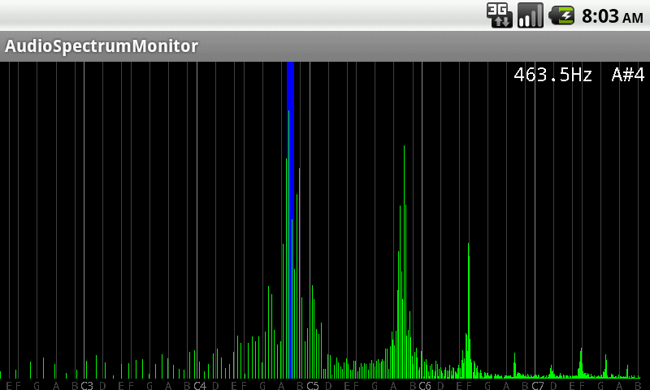

【Androidアプリ】 音声スペクトルモニター AudioSpectrumMonitor
更新日：2015/8/23
マイクから入力した音声のスペクトルをリアルタイムに表示するアプリです。横軸が音階になっています。

特徴
マイクから入力した音声のスペクトルをリアルタイムに表示
横軸を音階で表示
C2～B7までの約5オクターブを表示
画面の横回転に対応
基本周波数（ピッチ）を推定して表示
ドラッグ、ピンチズームに対応
チューナー機能
録音と再生が可能
動作環境
Android 2.1以上
ダウンロード
アンドロイドマー ケットで見る
（ブラウザ）
アンドロイドマーケットからインストール
（Andoroid 端末のみ）
使い方
マイクから音声を入力してください。スペクトルがリアルタイムに表示されます。横回転 に対応しています。
基本周波数について
基本周波数が推定される場合、その音階の位置に青色の縦線が表示されます。
また、画面の右上に基本周波数の値(Hz)と、音階名が表示されます。
なお、音声に複数の楽器や和音を含む場合は、正しく解析できません。
サポート/連絡先
意見・要望・感想・バグ報告はメールで承ります。
更新履歴
ver 1.15 2015/8/23
音程(ピッチ)の解析精度を向上した
半音の線を表示する設定を追加
A4の周波数のキャリブレーションの設定を追加
設定画面にデフォルト値に戻すボタンを追加
ver 1.04 2011/7/22
3倍音を誤検知する場合がある問題を修正
ver 1.0.3 2011/7/15
基本周波数の推定機能を追加
ver 1.0.2 2011/7/13
バックグラウンドから再開した際に異常終了するバグを修正
ver 1.0.1 2011/7/12
FFTライブラリを変更
ver 1.0.0 2011/7/11 初公開
トップページへ